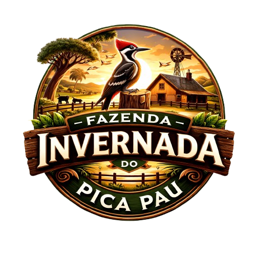
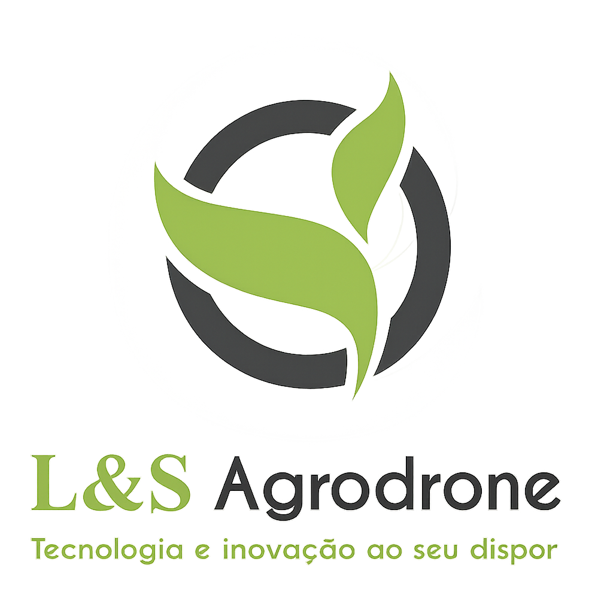

Acesso ao Mapa
Login
Senha
Lembrar senha
Entrar
Login ou senha inválidos.
A sessão expira automaticamente às
23:59:59
.
© 2026 EcoMap ·
ecomap.drone@gmail.com
Finalizar
Cancelar

Fazenda Invernada do Pica Pau
São Joaquim/SC
Data do Voo: 13/02/2026